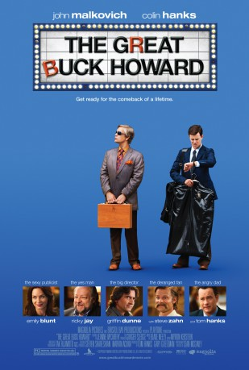

#6932 Der Große Buck Howard
Alternativ: The Great Buck Howard
 
 IMDB-Wertung: 6.5 / 10
IMDB-Wertung: 6.5 / 10  Metascore: 0
Metascore: 0 
When a law school dropout answers an advertisement to be a personal assistant he unknowingly signs on to work for a belligerent has-been magician struggling to resurrect his career. This leads to a journey across the country staging the comeback of a lifetime.
Jahr: 2008
Dauer: 90 Minuten
FSK: 12
Land: USA Studio: Magnolia PicturesTonspuren: DTS - ,
Untertitel: Deutsch,
Auflösung: 1080p (1920x1040) Größe: 8140 MB
Genre: Drama, Komödie
Regisseur: Sean McGinly
Drehbuch: Sean McGinly
Soundtrack:
Darsteller:
Datei: X:\2008(G-M)\Große Buck Howard, Der (2008, FSK12, 1920x1040).mkv seit 08.09.2017
Festplatte: HD 2008(G-Z)-2009(A-F)
 Es gibt insgesamt 73 Filme in der Gruppe '2008(G-M)'
Es gibt insgesamt 73 Filme in der Gruppe '2008(G-M)'